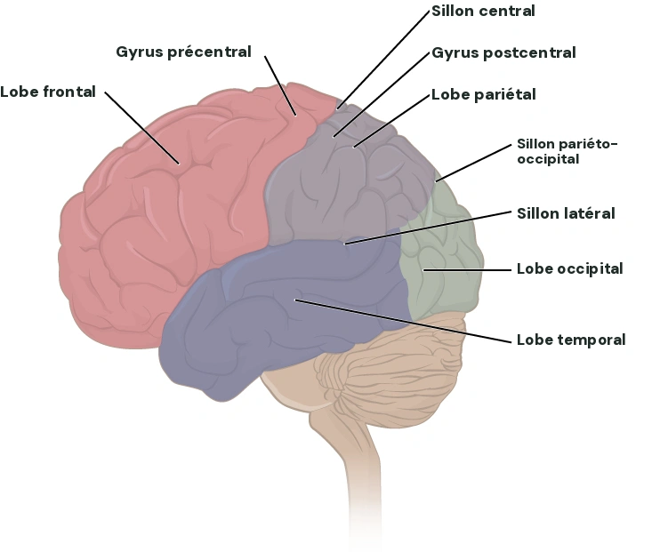

LE CERVEAU, ÉTAPE PAR ÉTAPE
Des repères.De la compréhension. Commence par un cours, observe ses structures, puis vérifie ce que tu as compris. Chaque notion a sa place.
Découvrir le cours 4 ↗ 
Anatomie de référence · OpenStax TON PARCOURS
Quatre cours, un fil conducteur.
Schéma : OpenStax, Anatomy & Physiology · CC BY 4.0 · libellés traduits.
SUIVRE L’INFORMATION
Un chemin, étape par étape. Choisis un circuit et suis ses relais dans l’atlas. La progression est simplifiée : le cerveau travaille aussi en boucles et en parallèle.
Le mouvement met aussi en jeu les ganglions de la base et le cervelet. Le parcours représente les grandes étapes de la commande, pas tous les circuits de contrôle.
Cerveau 3D
Coupes IRM
Le neurone
Vue latérale gauche
Lobes Naturel
Chargement de l’anatomie Surfaces corticales et structures profondes
AVANT ARRIÈRE
Gauche Droite Face Dessus Médiale ↺
Glisse pour tourner · Molette ou deux doigts pour zoomer · Clique une région
Zone sélectionnée · contour clair
Trois plans, un même cerveau Déplace chaque coupe pour traverser l’anatomie.
Recentrer les coupes
IRM T1 de référence. D/G : droite/gauche de la personne, A/P : avant/arrière, H/B : haut/bas.
Chargement des coupes IRM…
CHANGEMENT D’ÉCHELLE Une cellule, un long chemin. Explore les parties du neurone en cliquant sur leurs noms.
nœud entre deux segments Propagation du potentiel d’action
Dendrites Soma Axone Myéline Terminaisons
µm Le corps cellulaire se mesure
jusqu’à > 1 m Certains axones sont beaucoup
1 µm = 1 000 nm Le nanomètre est
Vision Étape 1 / 8
▶ Parcourir ×
Précédent Circuit simplifié · les relais ne sont pas tous représentés Suivant
Des formes réelles, des repères pédagogiques ×
Les surfaces du cerveau et les coupes IRM viennent du modèle moyen FreeSurfer fsaverage . La surface 3D utilise fsaverage5 et les régions anatomiques de l’atlas Destrieux 2009 . Les structures profondes sont extraites de la segmentation aseg, dans le même système de coordonnées.
Les couleurs servent à repérer les régions. Les aires V1, A1, S1, M1, les aires secondaires et les réseaux associatifs sont montrés à partir de leurs repères anatomiques ; leurs frontières fonctionnelles ne sont pas mesurées dans ce modèle. Un contour clair indique la limite du repère anatomique coloré, pas une frontière fonctionnelle exacte.
Chez l’humain, les aires motrices secondaires comprennent notamment le cortex prémoteur latéral et l’aire motrice supplémentaire (SMA / AMS). La notation « M2 » varie selon les cours et désigne surtout une région dans les atlas de rongeurs. Le gyrus frontal supérieur sert de repère à la SMA : il est plus étendu qu’elle. Les réseaux associatifs visuels, auditifs et somatosensoriels sont distingués ; ils peuvent échanger avec des régions multimodales communes.
La moelle épinière, les nerfs optiques et auditifs ne sont pas représentés par des surfaces 3D dans cet atlas. Ils ne sont donc pas remplacés par le tronc cérébral ou le chiasma. Les exemples utilisés pour la tractographie, l’IRMf, la stimulation et les réseaux d’émotion sont explicitement nommés comme illustrations.
Le parcours olfactif est décrit sans inventer de bulbe ou de cortex piriforme : ces structures ne sont pas segmentées ici. Les étapes périphériques figurent dans les circuits. Le schéma du neurone utilise une autre échelle.
Le contenu suit ton cours et les questions de notre discussion, avec des compléments identifiés sur les aires motrices secondaires et la SMA. Certaines formulations ont été précisées : A1 dans les gyri de Heschl, V1 autour du sillon calcarin, et l’absence de relais thalamique obligatoire avant le cortex olfactif primaire.
Le site organise les quatre cours fournis en 34 chapitres. Les exemples cliniques sont des supports d’apprentissage. Les précisions portent notamment sur la résection de H.M., les associations positives et négatives de l’amygdale, les noyaux du thalamus, les réseaux d’attention et de langage, et le locked-in syndrome.
Les schémas anatomiques 2D viennent d’OpenStax, Anatomy & Physiology , dans les versions sous licences CC BY 4.0 ou CC BY 3.0 indiquées sous chaque image. Les libellés ont été traduits en français ; les versions d’exercice masquent les noms. Les illustrations et les traits anatomiques d’origine sont conservés. Les dessins du neurone et de la glie sont extraits des pages 3 et 6 du TD APHY 2026 fourni (Pascal Benquet et Joan Duprez), sans les textes de correction.
Le TD d’anatomie de Pascal Benquet est intégré dans Révision : quatre exercices et sept illustrations extraites des deux pages. Les emplacements des trois dessins en coupe reprennent les pointes des flèches du document. La correction est pédagogique, avec noms et rôles après validation ; elle ne prétend pas être une correction écrite par l’enseignant. V1 et A1 sont distinguées des régions simplement visibles de profil, et les territoires associatifs ne sont pas présentés comme des aires sensorielles primaires.
L’hypothalamus, l’hypophyse et les ganglions de la base ne sont pas segmentés dans les surfaces 3D disponibles : leur schéma 2D est accessible depuis les chapitres. Les schémas projetant plusieurs structures profondes ne représentent pas une coupe IRM réelle.
Le cours 3 couvre neurones, glie, potentiel de membrane, gradients ioniques, pompe Na⁺/K⁺, potentiel d’action, conduction et enregistrement. Ses schémas de membrane, de pompe et de PA sont créés pour expliquer les notions du texte : ils ne sont pas des mesures expérimentales. Les deux ateliers supposent des conditions pédagogiques explicites. Les précisions incluent le rôle de l’endothélium dans la barrière, l’inactivation de NaV, le maintien des gradients par la pompe et la distinction voltage-clamp / current-clamp.
Le cours 4 détaille les synapses chimiques, le calcium et les SNARE, les PPSE/PPSI, les sommations, les récepteurs au glutamate et au GABA, NMDA, la plasticité et les réseaux épileptiques. Les calculs sont des modèles simultanés et linéaires. La classification des crises est précisée avec l’ILAE 2025 ; les priorités de révision ne sont pas des prédictions d’examen. L’image des cortex moteurs fournie est intégrée au chapitre du mouvement ; sa source éditoriale n’est pas indiquée dans le fichier.